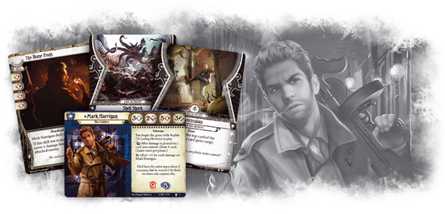

Table of Contents
-
Investigator Overview
-
Early Game & Mulligan Guide
-
Mid Game
-
Late Game
-
Upgrade Path
-
Thanks and Version History
Sophie & Mark Harrigan Overview
[Mark Harrigan](/card/03001) has the most limited card pool of all current investigators and five base strength, so it’s easy pigeonhole him into an exclusively combat roll. However, his beloved wife, [Sophie](/card/03009), is there to make sure that doesn’t happen.
I play Mark Harrigan and Sophie as a well rounded unit that is able to fight, move around the map, support allies, deal with the encounter deck, and gather clues. Solo or in a team, this build works.
Sophie and Mark have incredible abilities that dance together like a couple on their wedding night. Sophie, In Loving Memory, enables you to gain +2 to any of your skill tests. This effect also pings her husband for 1 direct damage. Once per phase, Mark Harrigan can draw a card after receiving damage.
To summarize: +2 to a skill test, +1 Card Draw; (-1 Health)
This decklist runs zero skill cards, and this is why. Skill tests cards like [Guts](/card/01089) or [Overpower](/card/01091) give +2 to a skill test, and if the test is successful +1 Card Draw. Sound familiar?
This combo means that we are taking one damage, but saving a card slot, and can essentially commit two wild icons to any skill test we take. Most decks run between 4-8 skills cards, so this is certainly a new twist on Mr. Harrigan. The drawbacks of taking damage and the inability to help our allies in skill test are overcome with creative deck building options.
This deck aims to support allies without merely committing to skill tests, all while keeping his weakness: Sophie, It was all my Fault on the brink. It's a balancing act that puts the decision making off of random draw and into the player’s hands.
If this sounds like an interesting approach to deck building, read on!
Early Game
Gearing Up
Investigating
Mulligan
Mark will never compete with Rex for the title of best clue gatherer.
[Flashlight](/card/01087) and Sophie bring you up to a respectable 4 knowledge against a -2 shroud location. This means that he will be able to grab clues early while fueling his draw engine, and give him something to do if no monsters are on the map. This combo is favored over [Evidence!](/card/01022) because of the flexibility. In a multiplayer game, depending on the number of clues left to gather, don’t be afraid to toss the second [Flashlight](/card/01087) for its icons to a knowledge skill test. Solo Mark will generally need both in order to grab enough clues.
Mulligan Guide:
Mark has a straightforward mulligan. There are two cards you really want to have, [Flashlight](/card/01087) and [Machete](/card/01020). Mulligan everything that isn’t named [Flashlight](/card/01087), [Machete](/card/01020) and only keep [Prepared for the Worst](/card/02184) if you don’t have a weapon. After that, prioritize healing. Mark is capable of fighting or investigating without these cards, but they enhance him so much it’s worth ignoring everything else and finding them early. Healing allows you to be aggressive in using [Sophie](/card/03009), a key to this deck, while helping you draw into missing pieces.
Your goals for the early game are to get Flashlight and/or Machete equipped and aggressively using Sophie to work on advancing the act deck.
Mid Game
Combat
Encounter Deck
Two weapons!? No guns!?! Are you mad!?
Look, guns in Arkham suck. And until we get a card printed that is worth including, we are only running two. Luckily, we have access to the best weapon in the game in [Machete](/card/01020). Combined with [Prepared for the Worst](/card/02184) and a hard mulligan, we are 68% likely to see one of them in our opening hand. Even if we miss it early, Mark’s excellent card draw means it will turn up eventually.
But does he need it?
Consider that the other Guardians only have 4 combat. He already has an innate +1, so all we’ll really missing is that sweet +1 damage per swing. Until we find [Machete](/card/01020) we achieve that with [Vicious Blow](/card/01025), [Beat Cop](/card/01018), and [Guard Dog](/card/01021).
[Beat Cop](/card/01018) deserves special mention in this deck for his synergy, damage to any card under Mark Harrigan’s control trigger his reactive card draw. He gives you a free
trigger action that can be used during any player action window, so waiting until the start of an enemy phase to ping for damage means Mark can potentially draw multiple cards per round, so be creative on which window you’re hitting. The upgraded [Beat Cop](/card/01028)
(2)
represents even more of these windows, so always be sure to prioritize [Beat Cop](/card/01028)
(2)
as your campaign progresses.
In the mid game you should continue attempting the advance the act deck aggressively, focus on staying below four damage and three horror, and support your allies by moving around the map a dealing with enemies.
End Game
Health Management
Support
At 14, cards that heal or tank damage comprise nearly half of the deck!
Assets that tank damage, [Guard Dog](/card/01021), [Beat Cop](/card/01018), and [True Grit](/card/03021) allow us to direct damage away from Mark, making sure he stays alive and away from Sophie,
It’s All My Fault
.
[The Home Front](/card/03007) converts damage taken to damage dealt, which is an awesome card for Mark. [Emergency Aid](/card/02105) gives us two more swings of Sophie, and [First Aid](/card/01019) gives us three or can be used on horror.
Horror is the real scary part about playing Mark. Yes, Sophie kicks in at five damage and turns to a weakness, but staying above the line is easy, and if crossed you and your allies have a chance to bring it back. But at five horror damage he dies. [True Grit](/card/03021) can’t soak it (which makes [Brother Xavier](/card/02106)
(1)
a fantastic upgrade), and [Beat Cop](/card/01018) and [Guard Dog](/card/01021) are defeated if they tank any horror. That’s why we’re running [First Aid](/card/01019) and ["If it bleeds..."](/card/02225).
Note:
I no longer advise running ["If it bleeds..."](/card/02225), preferring [Smoking Pipe](/card/02116) which allows you to trigger card draw, reliably move horror off of Mark Harrigan and onto his assets, and can be used to detonate [Brother Xavier](/card/02106) once he enters play. A huge thanks to user [CecilAlucardX](https://arkhamdb.com/user/profile/6285/CecilAlucardX) for this suggestion!
[Painkillers](/card/02117) help us stay at the magical 3 damage, which means that Shell Shock only does 1 horror. When playing Mark, always be sure to understand how much damage [Shell Shock](/card/03008) will do if it’s still a potential draw.
Mark Harrigan enables his fellow investigators to avoid super crippling turns. [Shortcut](/card/02022) grants him mobility to move across the map with actions to spare and allies with their threat area and remember that [Elusive](/card/01050) can be used without being engaged and that the location you travel to only has to be revealed,
not necessarily even connected!
The fast action in [Taunt](/card/02017) ensure you’re not risking damage into a fragile investigator, or allows Mark to deal with enemies. ["Let me handle this!"](/card/03022) and Sophie dominate the encounter deck, and allow fellow investigators a turn where they don’t have to worry about any new threats. [True Grit](/card/03021) ensures they stay healthy and ready to answer any future threats!
The goal of the end game is to close out the game by whatever means necessary by healing up and spamming Sophie to pass any skill test Mark and Sophie face.
Upgrade Paths
Prioritize [Beat Cop](/card/01028)
(2)
, followed by [Charisma](/card/02158)
(3)
[Brother Xavier](/card/02106)
(1)
, [Stand Together](/card/02148)
(3)
, [Taunt](/card/02019)
(2)
, and [Vicious Blow](/card/02299)
(2)
is a good path.
Mark needs allies to soak damage for him and [Charisma](/card/02158)
(3)
is important. [Beat Cop](/card/01028)
(2)
is a stellar upgrade which synergies with Mark. [Brother Xavier](/card/02106)
(1)
is also incredible and helps soak horror. ["I've had worse…"](/card/02261)
(4)
competes with [Moment of Respite](/card/02273)
(3)
for the slot ["If it bleeds..."](/card/02225) occupies and can also act to mitigate horror from your weakness, enemies, or even [Sophie](/card/03009) or [Painkillers](/card/02117).
In multiplayer, [Stand Together](/card/02148)
(3)
replaces [Emergency Cache](/card/01088), and no one will ever complain about being the recipient (until they draw their weakness!).
[Police Badge](/card/01027)
(2)
is phenomenal, and when paired with [Ever Vigilant](/card/03023) the expensive assets become easy to get into play. The permanent [Keen Eye](/card/02185)
(3)
is always great to have if you have extra experience laying around, but Sophie will generally take on the role.
---
Thank you for reading this guide! I have been playing Arkham Horror since launch and have seen nearly every investigator through the campaign. I hope you enjoy this twist on Sophie and Mark. Give it a try and tell me how you like it!
I'd like to give a special shout out to user [DadouXIII](https://arkhamdb.com/user/profile/946/DadouXIII) for his beautiful guides and for showing me all kinds of formatting tricks. You should check em' out!